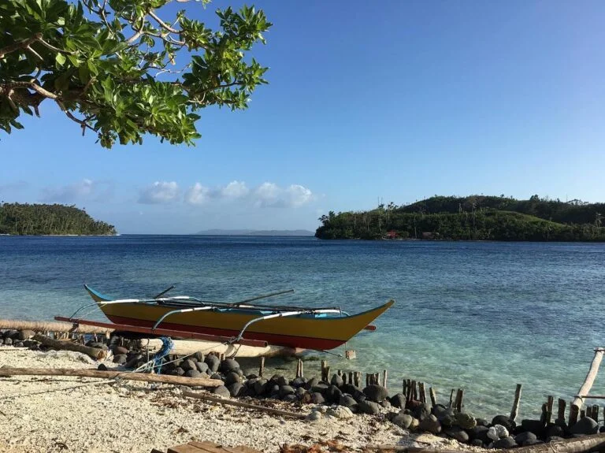
Bicol
Breathtaking view of mountains.

Baguio
Summer Capital of the Philippines.
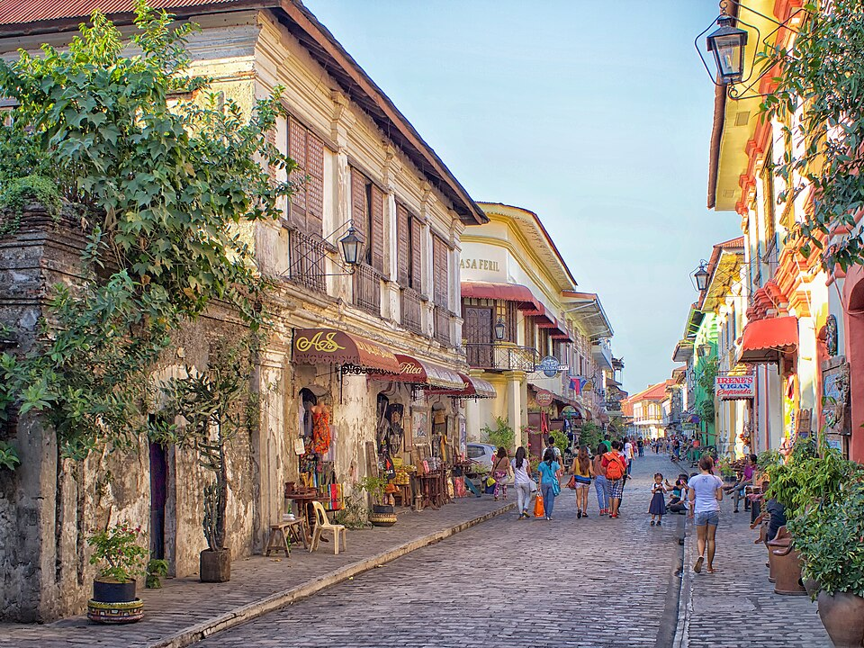
Vigan
Famous Spanish-era houses.
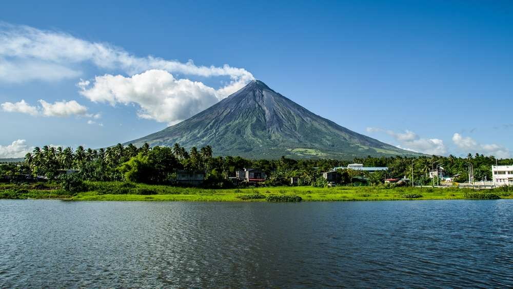
Mayon Volcano
Perfect cone-shaped volcano.
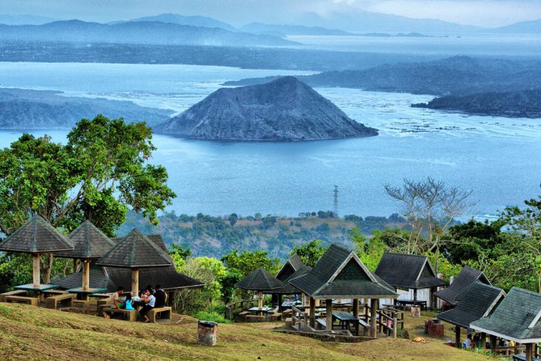
Tagaytay
View of Taal Volcano.
|
 Bicol Breathtaking view of mountains. |
Baguio Summer Capital of the Philippines. |
 Vigan Famous Spanish-era houses. |
 Mayon Volcano Perfect cone-shaped volcano. |
 Tagaytay View of Taal Volcano. |
 Chocolate Hills Famous hills in Bohol. |
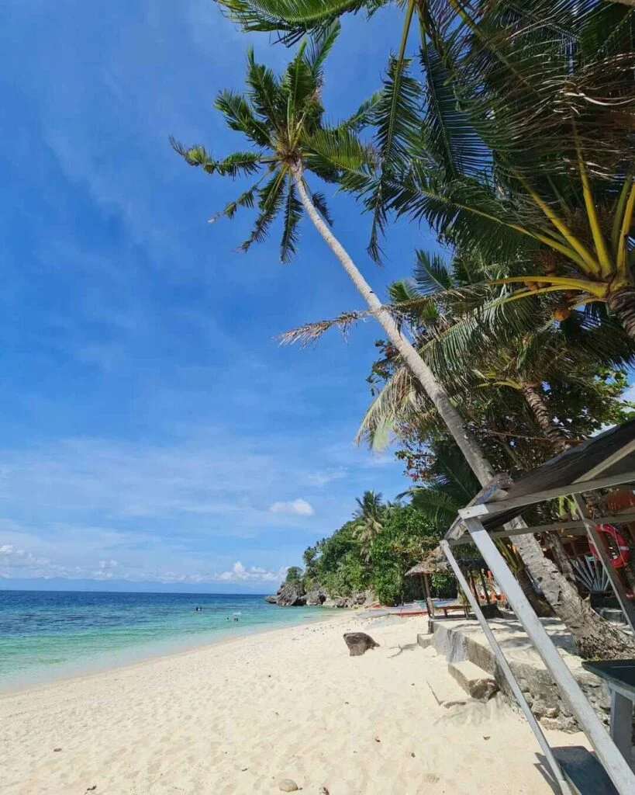 Guimaras Home of the sweetest mangoes. |
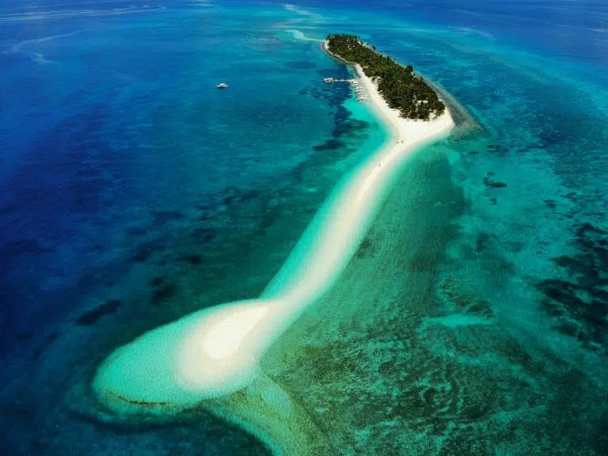 Kalanggaman Long white sandbar. |
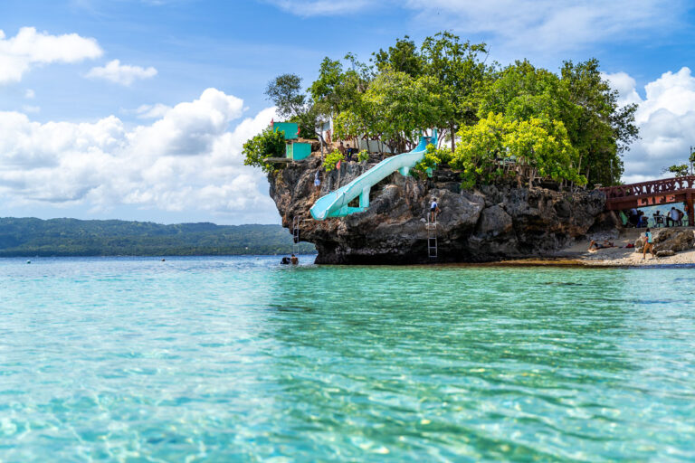 Siquijor Island with crystal-clear beaches. |
 Kawasan Falls Beautiful waterfalls in Cebu. |
|
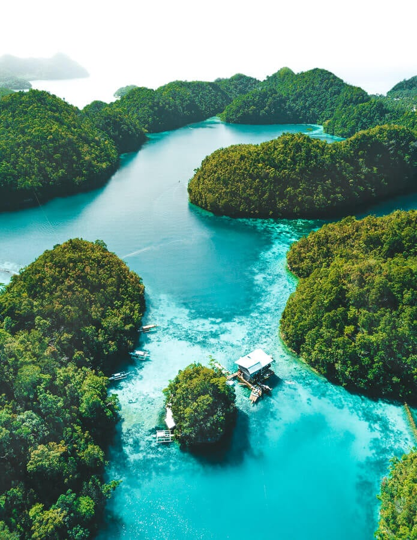 Siargao Surfing capital of the Philippines. |
 Eden Nature Park Beautiful mountain resort. |
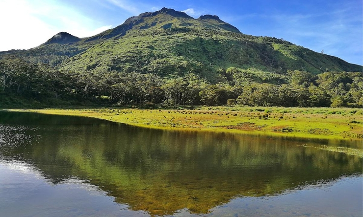 Mt. Apo Highest mountain in the Philippines. |
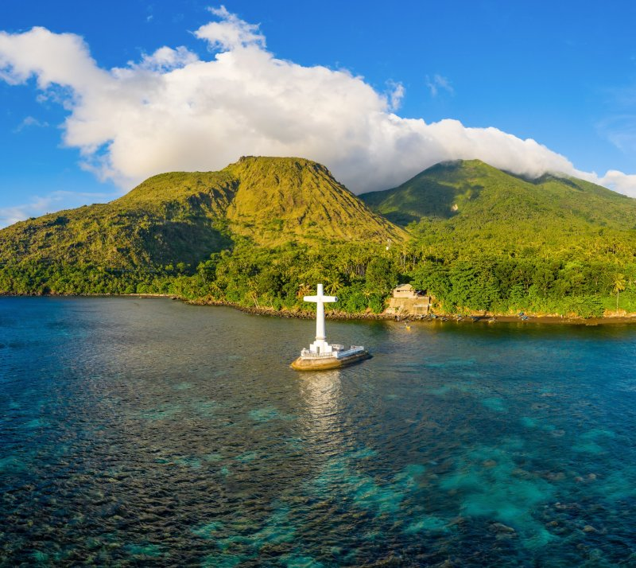 Camiguin Island Born of Fire due to its seven volcanoes. |
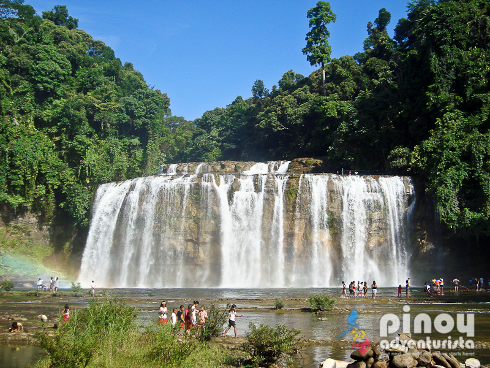 Tinuy-an Falls Wide and majestic waterfall. |